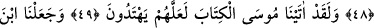

KUDRETİMİZE
BİR ALÂMET KILDIK
45-46. Sonra âyetlerimizle ve apaçık bir fermanla Musa ve kardeşi Hârun’u
Firavun’a ve ileri gelenlerine gönderdik. Onlar ise kibre kapıldılar ve ululuk
taslayan bir kavim oldular.
47. Bu yüzden: “Kavimleri bize kölelik ederken, bizim gibi olan bu iki adama
inanır mıyız?” dediler.
48. Böylece onları yalanladılar ve bu sebeple helâk edilenlerden oldular.
49. Andolsun biz Musa’ya, belki onlar yola gelirler diye, Kitab’ı verdik.
50. Meryem oğlunu ve annesini de (kudretimize) bir alâmet kıldık; onları,
yerleşmeye elverişli, suyu bulunan bir tepeye yerleştirdik.
“Sonra âyetlerimizle” Bunlar; el, asâ, tufan, çekirge, haşere, kurbağalar, kan,
ürünlerin eksiltilmesi ve vebadan oluşan dokuz âyet/mûcizedir. Bu mucizeler arasında
denizin yarılmasını saymaya imkân yoktur. Çünkü burada kasdedilen, onların
yalanladıkları âyetlerdir. “Ve apaçık bir fermanla” gâyet açık ve hasmı susturucu bir
delille, yâni asâ ile gönderdik. Asâ, diğer mûcizelerden üstün olduğu için özel olarak
zikredilmiştir. Ya da burada kasdedilen âyetlerin kendisidir. Onların bu şekilde atıf
yoluyla ifâde edilmesi, bu âyetlerin yüce unvanları kendilerinde topladıklarına dikkat
çekmek ve onların farklılığını zâtî farklılık mertebesine indirmektir. “Mûsâ ve kardeşi
Hârun’u Firavun’a ve ileri gelenlerine” Kıbtîlerden onun kavminin eşrâfına
“gönderdik.” Onlar özellikle zikredildiler. Çünkü İsrâiloğulları’nın Mûsâ (a.s.) ile
birlikte gönderilmesi, onlara tâbi olanların değil, onların iznine bağlıydı.
“Onlar ise” îman ve tâbi olmaktan imtina edip “kibire kapıldılar” Kibrin en büyüğü
ise kulların Rablerinin âyetlerini, apaçık ortaya çıktıktan ve şüphe ortadan kalktıktan
sonra onun gönderip bildirdiklerini hafife almaları; onları yerine getirme ve kabul etme
konusunda büyüklük taslamalarıdır. “Ve ululuk taslayan” mütekebbir, kibir ve
tuğyanda/azgınlıkta haddi aşan “bir kavim oldular” yâni âdetleri kibirlenmek ve